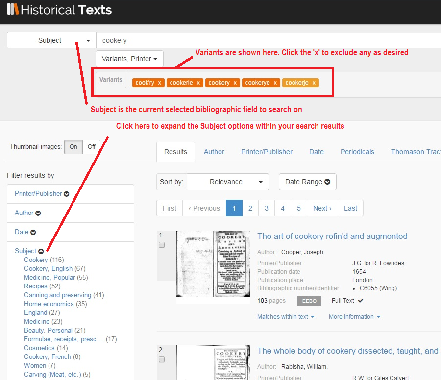
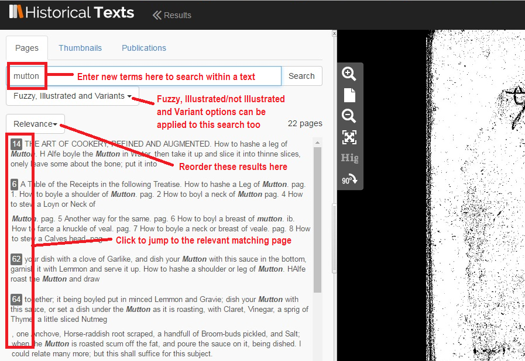

<div class="row">
    <div class="col-xs-12 topSpace">
        <div class="sideMenu">
            <div class="title">Support</div>
            <ul>
                <li><a href="">Support Home</a></li>
                <li><a href="/help/">Help File</a></li>
                <li><a href="/librarians/">Librarians</a></li>
                <li><a href="/faq/">FAQ</a></li>
				<li><a href="/quickref/">Quick Reference Guide</a></li>
				<li><a href="/features/">Features</a>
													 <ul>
	<!--    <li><a href="/astronomy">Astronomy</a></li> -->
            <li><a href="/blcovers">British Library Covers</a></li>
	<!--    <li><a href="/christmas">Christmas</a></li>-->
	        <li class="selected"><a href="/cookery">Cookery</a></li>-->
	     	<li><a href="/locallondon">Local History&#58; London</a></li>
			<li><a href="/maps">Maps</a></li>
			<li><a href="/music">Music</a></li>
            <li><a href="/shakespeare">Shakespeare</a></li>
	<!--    <li><a href="/travel">Travel and Explorers</a></li>-->		
            <li><a href="/witchcraft">Witchcraft</a></li>
            </ul>
			</li>
			
            </ul>
        </div>

        <div class="support">

            <ol class="breadcrumb">

				    <li><a href="/features/">Features</a></li>
                    <li class="active">Cookery</a></li>

            </ol>


           <h1>Cookery</h1>
           
		   
           <p class="lead">Page under construction</p>
		   

           
           <p class="lead">Historical Texts holds a large number of cookery books and other texts about food. Here for your perusal we&#39;ve selected some of the most fascinating ones....</p>
		
		<br />
		

<h2>Early Cookbooks</h2>
<p>Here we have early cookbooks by Thomas Dawson, John Murrell and Robert May &#40;sometimes referred to as the &lsquo;Gordon Ramsay&rsquo; of his time&#41;....</p>
       
<div class=row> <div class="col-sm-6 col-md-3"> <div class=thumbnail>  <div class=caption> <h3>The good husvvifes iewell</h3>
<p>Published&#58; 1610</p> <p><span class="badge">EEBO</span></p><p><a href=https://historicaltexts.jisc.ac.uk/eebo-99840940e class="btn btn-primary" role=button>View text</a> </p> </div> </div> </div> 

<div class=row> <div class="col-sm-6 col-md-3"> <div class=thumbnail>  <div class=caption> <h3>Murrels tvvo books of cookerie and carving</h3></p> <p>Published&#58; 1641</p> <p><span class="badge">EEBO</span></p><p><a href=https://data.historicaltexts.jisc.ac.uk/view?pubId=eebo-99831681e&index=eebo&pageId=eebo-99831681e-36146-5 class="btn btn-primary" role=button>View text</a> </p> </div> </div> </div> 

<div class=row> <div class="col-sm-6 col-md-3"> <div class=thumbnail>  <div class=caption> <h3>The accomplisht cook, or, The art &#38; mystery of cookery</h3> <p>Published&#58; 1660</p> <p><span class="badge">EEBO</span></p><p><a href=https://historicaltexts.jisc.ac.uk/eebo-99859342e
 class="btn btn-primary" role=button>View text</a> </p> </div> </div> </div>
  

</div></div></div>


<h2>Firsts</h2>
<p>Here we have what might be the earliest cookbook present in Historical Texts, a cookbook regarded as the start of more modern cooking trends, and the first cookbook to picture a cook reading a book &#40;actually reading the book in question&#41; on the cover....</p>
 
 <div class=row> <div class="col-sm-6 col-md-3"> <div class=thumbnail>  <div class=caption> <h3>A proper new booke of cookery</h3><p>Published&#58; 1575</p> <p><span class="badge">EEBO</span></p><p><a href=https://historicaltexts.jisc.ac.uk/eebo-99851406e class="btn btn-primary" role=button>View text</a></p> </div> </div> </div> 

<div class=row> <div class="col-sm-6 col-md-3"> <div class=thumbnail>  <div class=caption> <h3>The ladies handmaid&#58; or, a compleat system of cookery&#59; on the principals of elegance and frugality. ... By Mrs. Sarah Phillips, …</h3><p>Published&#58; 1758 <p><span class="badge">ECCO</p><p><a href=https://data.historicaltexts.jisc.ac.uk/view?pubId=eccoii-1333000500&index=eccoii&pageId=eccoii-1333000500-4680 class="btn btn-primary" role=button>View text</a></p> </div> </div> </div> 

<div class=row> <div class="col-sm-6 col-md-3"> <div class=thumbnail>  <div class=caption> <h3>A new present for a servant maid&#58; containing rules for her moral conduct both with respect to herself and her superiors&#58; the whole art of cooking, …</h3> <p>Published&#58; 1771 <p><span class="badge">ECCO</span></p><p><a href=https://historicaltexts.jisc.ac.uk/ecco-0227700300  class="btn btn-primary" role=button>View text</a> </p> </div> </div> </div> 

           </div></div></div>

<h2>Hannah Woolley &#45; The First Professional Cookery Writer&#63;</h2>
<p>Here we have three publications by Hannah Woolley, thought to be perhaps the first person to make a living from writing about cookery....</p>

 <div class=row> <div class="col-sm-6 col-md-3"> <div class=thumbnail>  <div class=caption> <h3>The accomplisht ladys delight in preserving, physick and cookery</h3><p>Published&#58; 1685</p> <p><span class="badge">EEBO</span></p><p><a href=https://data.historicaltexts.jisc.ac.uk/view?pubId=eebo-99833278e&index=eebo&pageId=eebo-99833278e-37754-4 class="btn btn-primary" role=button>View text</a></p> </div> </div> </div> 
 
 <div class=row> <div class="col-sm-6 col-md-3"> <div class=thumbnail>  <div class=caption> <h3>The queen&#61;like closet, or, Rich cabinet</h3> <p>Published&#58; 1672</p> <p><span class="badge">EEBO</span></p><p><a href=https://data.historicaltexts.jisc.ac.uk/view?pubId=eebo-ocm47012728e&index=eebo&pageId=eebo-ocm47012728e-174697-2 class="btn btn-primary" role=button>View text</a> </p> </div> </div> </div>
  
 <div class=row> <div class="col-sm-6 col-md-3"> <div class=thumbnail>  <div class=caption> <h3>A supplement to The queen&#45;like closet, or, A little of everything</h3> <p>Published&#58; 1674</p><p><span class="badge">EEBO</span></p><p><a href=https://historicaltexts.jisc.ac.uk/eebo-ocm42475293e
 class="btn btn-primary" role=button>View text</a> </p> </div> </div> </div> 
 </div></div></div>

         


<h2>Glasse and Cook</h2>
<p>Here we have two publications by 18th Century cookery writer Hannah Glasse, and one by her contemporary, Ann Cook, which includes a 68&#45;page critique of Glasse&#39;s &ldquo;The art of cookery&rdquo;&#33;</p>

 <div class=row> <div class="col-sm-6 col-md-3"> <div class=thumbnail>  <div class=caption> <h3>The art of cookery, made plain and easy&#59; which far exceeds any thing of the kind ever yet published. ... By a lady.</h3> <p>Published&#58; 1747</p><p><span class="badge">ECCO</span></p><p><a href=https://historicaltexts.jisc.ac.uk/ecco-0657700400 class="btn btn-primary" role=button>View text</a> </p> </div> </div> </div> 
 
 <div class=row> <div class="col-sm-6 col-md-3"> <div class=thumbnail>  <div class=caption> <h3>Professed cookery</h3><p>Published&#58; 1755</p> <p><span class="badge">ECCO</span></p><p><a href=https://data.historicaltexts.jisc.ac.uk/view?pubId=eccoii-1378100200&index=eccoii&pageId=eccoii-1378100200-110
 class="btn btn-primary" role=button>View text</a> </p> </div> </div> </div>  
 
  <div class=row> <div class="col-sm-6 col-md-3"> <div class=thumbnail>  <div class=caption> <h3>The compleat confectioner&#58; or, the whole art of confectionary made plain and easy ... By H. Glasse, author of the art of cookery.
</h3><p>Published&#58; 1760</p> <p><span class="badge">ECCO</span></p><p><a href=https://historicaltexts.jisc.ac.uk/ecco-0185200400
 class="btn btn-primary" role=button>View text</a> </p> </div> </div> </div> 
  
  
   </div></div></div>       

<h2>Acton, Beeton and Yates</h2>   

<p>Here we have publications by three of the most iconoclastic cookery writers of the 19th Century&#58; Eliza Acton, often praised as one of the finest cookery writers of all time, the Suffragist and progressive cook Lucy Yates, and the ubiquitous Isabella Mary Beeton, better known as Mrs Beeton, whose works took sales of cookery books to a new level....</p>
   

 <div class=row> <div class="col-sm-6 col-md-3"> <div class=thumbnail>  <div class=caption> <h3>Modern cookery, in all its branches</h3> <p>Published&#58; 1845</p><p><span class="badge">UKMHL</span></p><p><a href=https://data.ukmhl.historicaltexts.jisc.ac.uk/view?pubId=ukmhl-b21531857&index=ukmhl&pageId=ukmhl-b21531857-230
 class="btn btn-primary" role=button>View text</a> </p> </div> </div> </div> 
 
 <div class=row> <div class="col-sm-6 col-md-3"> <div class=thumbnail>  <div class=caption> <h3>The English bread&#45;book</h3><p>Published&#58; 1857</p> <p><span class="badge">UKMHL</span></p><p><a href=https://data.ukmhl.historicaltexts.jisc.ac.uk/view?pubId=ukmhl-b21531006&index=ukmhl&pageId=ukmhl-b21531006-5 class="btn btn-primary" role=button>View text</a> </p> </div> </div> </div>  
 
  <div class=row> <div class="col-sm-6 col-md-3"> <div class=thumbnail>  <div class=caption> <h3>The profession of cookery, from a French point of view</h3><p>Published&#58; 1894</p> <p><span class="badge">UKMHL</span></p><p><a href=https://ukmhl.historicaltexts.jisc.ac.uk/ukmhl-b2039052x
 class="btn btn-primary" role=button>View text</a> </p> </div> </div> </div> 
  
  
   </div></div></div>     
   
   
    <div class=row> <div class="col-sm-6 col-md-3"> <div class=thumbnail>  <div class=caption> <h3>A handbook of fish cookery</h3> <p>Published&#58; 1897</p><p><span class="badge">UKMHL</span></p><p><a href=https://ukmhl.historicaltexts.jisc.ac.uk/ukmhl-b20412666 class="btn btn-primary" role=button>View text</a> </p> </div> </div> </div>
 
 <div class=row> <div class="col-sm-6 col-md-3"> <div class=thumbnail>  <div class=caption> <h3>The book of household management&#59; comprising information for the mistress ... </h3><p>Published&#58; 1861</p> <p><span class="badge">UKMHL</span></p><p><a href=https://data.ukmhl.historicaltexts.jisc.ac.uk/view?pubId=ukmhl-b21527799&index=ukmhl&pageId=ukmhl-b21527799-507 class="btn btn-primary" role=button>View text</a> </p> </div> </div> </div>  
 
  <div class=row> <div class="col-sm-6 col-md-3"> <div class=thumbnail>  <div class=caption> <h3>Beeton&#39;s every&#45;day cookery and housekeeping book</h3><p>Published&#58; 1891</p> <p><span class="badge">UKMHL</span></p><p><a href=https://data.ukmhl.historicaltexts.jisc.ac.uk/view?pubId=ukmhl-b2152841x&index=ukmhl&pageId=ukmhl-b2152841x-675 class="btn btn-primary" role=button>View text</a> </p> </div> </div> </div> 
  
  
   </div></div></div>     
   
<h2>The weird and the wonderful</h2>   

<p>Here we have soome more lighthearted publications &#45; some of which are related to cookery in title only&#33; We have &ldquo;Political Cookery&rdquo;, some fiction in &ldquo;Caught By A Cook&rdquo;, &ldquo;The Cottage Cook&rdquo;,  details of the first ever pressure cooker &#40;or &lsquo;steam digester&rsquo;&#41;, the lyrical epistles of &lsquo;Margery the cook&#45;maid&rsquo;, and finally an unattributed illustration of a man sat on a lifting device while eating&#33;</p>
   

   
 <div class=row> <div class="col-sm-6 col-md-3"> <div class=thumbnail>  <div class=caption> <h3>Political Cookery&#58; including a liberal bill of fare. A satire. In verse.</h3> <p>Published&#58; 1882</p><p><span class="badge">BL</span></p><p><a href=https://data.historicaltexts.jisc.ac.uk/view?pubId=bl-002761405&index=bl&pageId=bl-002761405-590478-7 class="btn btn-primary" role=button>View text</a> </p> </div> </div> </div> 
 
 <div class=row> <div class="col-sm-6 col-md-3"> <div class=thumbnail>  <div class=caption> <h3>Caught by a Cook.</h3><p>Published&#58; 1895</p> <p><span class="badge">BL</span></p><p><a href=https://data.historicaltexts.jisc.ac.uk/view?pubId=bl-000843214&index=bl&pageId=bl-000843214-646486-5
 class="btn btn-primary" role=button>View text</a> </p> </div> </div> </div>  
 
  <div class=row> <div class="col-sm-6 col-md-3"> <div class=thumbnail>  <div class=caption> <h3>The cottage cook, or, Mrs. Jones's cheap dishes&#59 shewing the way to do much good with little money.</h3><p>Published&#58; 1797</p> <p><span class="badge">ECCO</span></p><p><a href=https://historicaltexts.jisc.ac.uk/ecco-1147600100 class="btn btn-primary" role=button>View text</a> </p> </div> </div> </div> 
  
  
   </div></div></div>     

 <div class=row> <div class="col-sm-6 col-md-3"> <div class=thumbnail>  <div class=caption> <h3>A new digester or engine for softning bones</h3> <p>Published&#58; 1681</p><p><span class="badge">EEBO</span></p><p><a href=https://data.historicaltexts.jisc.ac.uk/view?pubId=eebo-ocm11864186e&index=eebo&pageId=eebo-ocm11864186e-50066-4 class="btn btn-primary" role=button>View text</a> </p> </div> </div> </div> 
 
 <div class=row> <div class="col-sm-6 col-md-3"> <div class=thumbnail>  <div class=caption> <h3>Two lyrick epistles&#58; or&#59; Margery the cook&#45;maid, to the Critical Reviewers.</h3><p>Published&#58; 1762</p> <p><span class="badge">ECCO</span></p><p><a href=https://historicaltexts.jisc.ac.uk/ecco-1217700800 class="btn btn-primary" role=button>View text</a> </p> </div> </div> </div>  
 
  <div class=row> <div class="col-sm-6 col-md-3"> <div class=thumbnail>  <div class=caption> <h3>Man seated on a lifting device in front of a table set with food</h3><p>Published&#58; 16&#45;&#45;&#63;</p> <p><span class="badge">EEBO</span></p><p><a href=https://historicaltexts.jisc.ac.uk/eebo-ocn226318180e class="btn btn-primary" role=button>View text</a> </p> </div> </div> </div> 
  
  
  
   </div></div></div>     


<h2>Into the 20th Century....</h2>   

<p>Finally we have three text showing changing tastes between the end of the 19th and start of the 20th Century....</p>
   

 <div class=row> <div class="col-sm-6 col-md-3"> <div class=thumbnail>  <div class=caption> <h3>A book of salads</h3> <p>Published&#58; 1903</p><p><span class="badge">UKMHL</span></p><p><a href=https://ukmhl.historicaltexts.jisc.ac.uk/ukmhl-b28052754 class="btn btn-primary" role=button>View text</a> </p> </div> </div> </div> 
 
 <div class=row> <div class="col-sm-6 col-md-3"> <div class=thumbnail>  <div class=caption> <h3>Five&#45;o&#39;clock tea</h3><p>Published&#58; 1886</p> <p><span class="badge">UKMHL</span></p><p><a href=https://ukmhl.historicaltexts.jisc.ac.uk/ukmhl-b28052717
 class="btn btn-primary" role=button>View text</a> </p> </div> </div> </div>  
 
  <div class=row> <div class="col-sm-6 col-md-3"> <div class=thumbnail>  <div class=caption> <h3>The pudding and pastry book</h3><p>Published&#58; 1900-1909</p> <p><span class="badge">UKMHL</span></p><p><a href=https://ukmhl.historicaltexts.jisc.ac.uk/ukmhl-b28054957 class="btn btn-primary" role=button>View text</a> </p> </div> </div> </div> 
  
  
   </div></div></div>     
   
   
   
   
<h2>Search tips</h2>

<p>There are several searchable subject categories in EEBO related to cookery</a>
<br />
Applying Variant Search options may also yield more results, especially with the EEBO collection.
<br />
Filter options allow you to see any subject classifications for your search results. 
</p> 

<p>

<p/>

<br />
<p>You can make use of the Pages tab in the Viewer to search within the publication you&#39;re viewing, provided it has full text available.</p>
<br />


        
        
        </div>
        </div>
    </div>